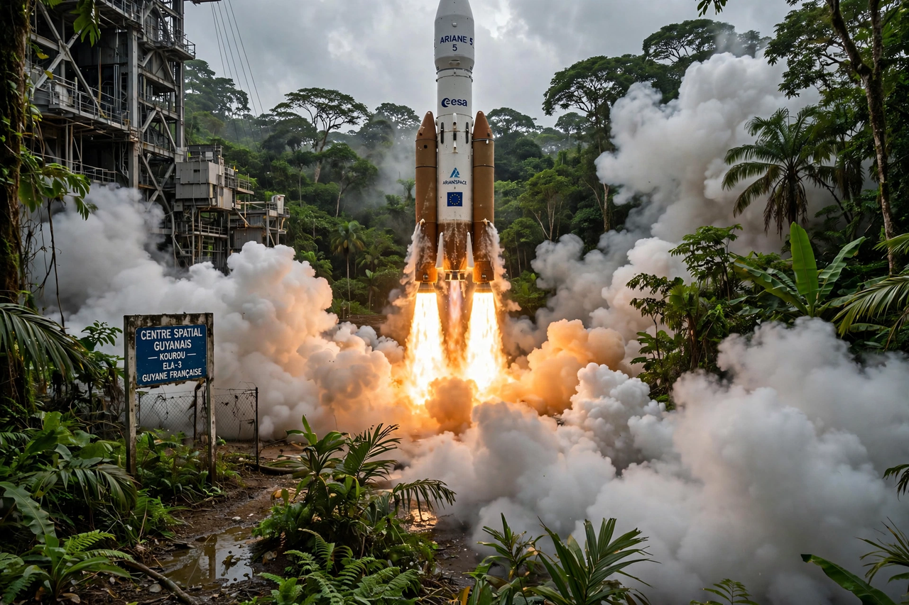

European Space Agency
| Founded | 30 May 1975 |
|---|---|
| Headquarters | Paris, France |
| Members | 23 European states (as commonly listed) |
| Spaceport | Kourou, French Guiana |

[Image: an Ariane rocket lifting off from the Kourou spaceport in French Guiana, flame and smoke billowing]The European Space Agency (ESA) is an intergovernmental organisation of 23 European member states (as commonly listed) dedicated to the exploration of space. Established in 1975, its headquarters are in Paris, with major centres including ESTEC in the Netherlands, ESOC (mission control) in Darmstadt, Germany, and the European Astronaut Centre in Cologne. Europe's spaceport is in Kourou, French Guiana.
ESA develops launchers (Ariane and Vega families), Earth-observation, navigation (Galileo), telecommunications and astronomy missions, and human spaceflight in partnership with NASA and other agencies aboard the International Space Station.
Programmes
ESA's science missions have included the Rosetta comet mission (which landed the Philae probe on comet 67P in 2014), the Gaia star-mapping observatory, the Planck and Herschel observatories, and contributions to the Hubble and James Webb space telescopes. Its Copernicus programme, run with the European Union, operates the Sentinel satellites monitoring land, oceans and atmosphere.
Ariane 5 flew reliably from 1996 to 2023; its successor Ariane 6 made its first flight in July 2024. Galileo, Europe's global navigation satellite system, provides independent positioning for Europe.
Cooperation and budget
ESA is funded by its member states roughly in proportion to their economies, with an annual budget in the region of €7 billion in recent years. Its convention requires the peaceful use of space, and its 'fair return' principle directs industrial contracts back to contributing states in proportion to their funding.
ESA astronauts have flown to the International Space Station since the 1990s, and ESA provides the European Service Module that powers NASA's Orion spacecraft for the Artemis programme of return to the Moon.